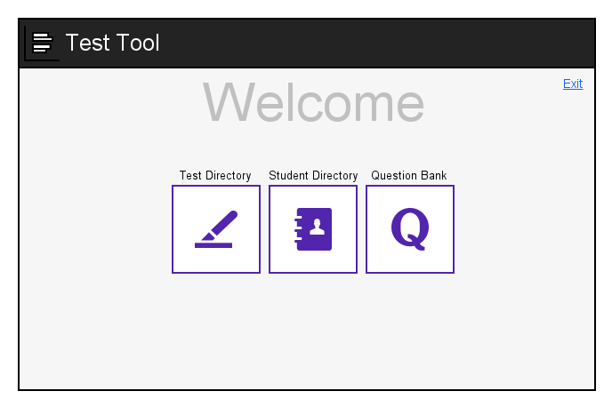

When the instructor initially opens Test Tool, the screen appears as shown in Figure
1.

Figure 1: Home screen.
The home screen displays three buttons that lead to three major menus - the
test directory, student directory, and question bank. The instructor may
go to any of these menus by clicking on the respective buttons.